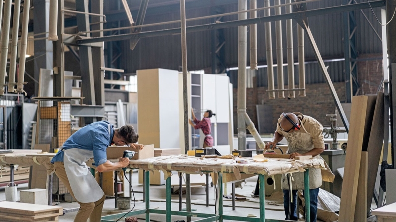

Hakkimizda
Türkiye’de mobilya sektörünün lideri Tatami, kurulduğu günden bu yana sektöründe öncü ve trendleri belirleyen marka konumundadır. 1957 yılında küçük bir mobilya atölyesinde temelleri atılan Tatami, üretim kapasitesinin üstünlüğü, tasarımda teknolojiye verdiği önem ve müşteri memnuniyetini her zaman ön planda tutan mağazacılık anlayışı ile yoluna hız kesmeden devam etmektedir.
Sektörde her alanda öncü bir kuruluş olmanın verdiği sorumluluğunun bilinciyle hareket eden Tatami, teknoloji ve inovasyonla, çağın ötesinde tasarımları hayata geçirirken, müşteri ihtiyaçlarına en uygun ve ulaşılabilir fiyatlarda koleksiyonlar üretmektedir. Tatami Mobilya, oturma gruplarından yemek odasına, yatak odasından çocuk ve genç odalarına, yatak, bazadan bahçe mobilyalarına kadar yüzlerce ürünü Kayseri, Sakarya ve Diyarbakır’da bulunan 4 ayrı tesisinde üretmektedir
Markanın hedefleri arasında sürdürülebilir inovatif projelerle ulaşılan cironun yanı sıra, markayı sürekli genç ve dinamik tutmak yer almaktadır. Tatami Mobilya ayrıca, uygulamaya alınan ihtisaslaşmış mağaza sayısı ile pazar payını daha da artırmak ve ulaşılamayan tüketici profillerine ulaşmak için çalışmalarını sürdürmektedir.
Tatami, “güven ver, kalpleri kazan, sonuç üret, en iyisi ol, geleceği yakala, müşterini anla, anlam kat, güçlendir, rehberlik et” prensipleri ışığında yoluna devam etmektedir
Misyonumuz
İnsanlığa ve ülkemize hizmet eden değerlerimizle, yaşam alanlarına mutluluk katmak.
Vizyonumuz
Sürdürülebilir gelişim ile takip edilen global bir şirket olmak.
Hedeflerimiz
- Mobilya sektörü liderliğini korumak,
- Sektörde dünyanın ilk 3 mobilya firması arasında yerini almak,
- Pazar payını artırmak,
- Tatami Yatak markasının yurt içi ve yurt dışı bayilik ağını genişletmek.
Degerlerimiz
- İnsana ve tabiata saygılı olmak,
- Ahlaki değerlere bağlı olmak,
- Yenilikçilik ve sürekli gelişim.
